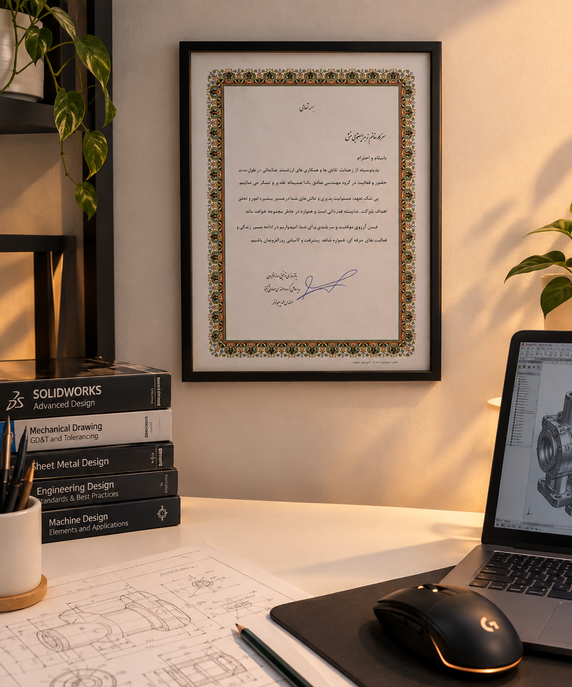

زهرا یعقوبی منش — مهندس طراحی مکانیک و طراحی محصول. بیش از یک دهه طراحی مکانیزم و نقشهکشی صنعتی؛ از توسعه محصول تا مهندسی ایجنت و ساخت ابزارهای هوشمند.
۰۱ / درباره من
دقیق در نقشه، پویا در مسیر، همگام با آیندهی Agentها. از طراحی مکانیزم و مهندسی معکوس تا توسعه محصول، ساخت ابزارهای هوشمند و مهندسی ایجنت؛ تجربه صنعتی را با تفکر سیستمی و فناوریهای نوین پیوند میدهم.
مهندس طراحی مکانیک با بیش از ۱۰ سال سابقه در طراحی مکانیک و نقشهکشی صنعتی، بههمراه تجربههایی در توسعه محصول. ایدهها را به مکانیزم، نمونه اولیه و در نهایت محصول قابل تولید تبدیل میکنم.
با تلورانسگذاری، صافی سطح، انطباقات و استاندارد GD&T آشنا هستم و بر شیتمتال، تمپلیتسازی، 5S و مهندسی معکوس تسلط دارم. توانایی ارائه طرح مفهومی (Conceptual) و طرح جزئیات (Detailed) را دارم و با WBS، OPC و P&ID آشنا هستم.
در کنار تجربه صنعتی، در مهندسی ایجنت و ساخت ابزارهای هوشمند برای سادهسازی فرآیندهای طراحی و مدیریت پروژه فعالیت میکنم. آمادهی همکاری پروژهای، دورکاری و پارهوقت هستم.

افتخار
قدردانی مدیرعامل گروه از تلاش، مسئولیتپذیری و همکاری ارزشمند در طول مدت فعالیت و نقش مؤثر در پیشبرد اهداف شرکت.
۰۲ / مسیر شغلی
گروه مهندسی صادق یکتا · مشهد
پرتو صنعت پاژ · مشهد
یاران قطعه طوس خراسان · مشهد
نوید صنعت سبز · شیراز
کیان تدبیر ژرفاندیش پاژ · مشهد
۰۳ / مهارتها
تلفیق مهندسی مکانیک، توسعه محصول، برنامهنویسی با هوش مصنوعی و ساخت Agentهای کاربردی برای هوشمندسازی فرآیندهای طراحی و مدیریت پروژه.
۰۴ / نمونهکارها
این بخش در حال تکمیل است؛ هر کارت به صفحهای مجزا برای افزودن تصاویر و توضیحات پروژه میرسد.